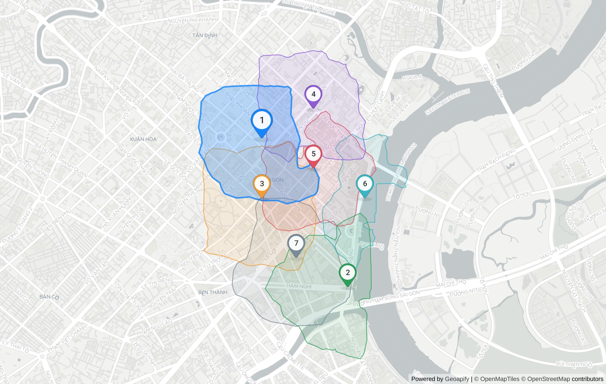

restaurant in Phường Sài Gòn
Where should I open an office-lunch restaurant in District 1?

| # | Candidate | Score | Demand | Competitors | Drive (min) | Evidence |
|---|---|---|---|---|---|---|
| 1 | Tổng Lãnh sự quán Pháp, Đường Nguyễn Thị Minh Khai 10-min walk reaches 0.81 km² with 45 office, 2 education.university and 69 competing catering.restaurant; 19 min average drive from 3 origin(s). | 0.82 | 47 | 69 | 18.7 | T14 T15 T16 T17 T18 T19 T55 T56 T57 |
| 2 | 2, Hàm Nghi 10-min walk reaches 0.76 km² with 21 office, 4 commercial.shopping_mall, 2 education.university and 78 competing catering.restaurant; 18 min average drive from 3 origin(s). | 0.67 | 27 | 78 | 18.3 | T32 T33 T34 T35 T36 T37 T55 |
| 3 | 168, Pasteur 10-min walk reaches 0.93 km² with 42 office, 6 commercial.shopping_mall, 1 education.university and 97 competing catering.restaurant; 20 min average drive from 3 origin(s). | 0.58 | 49 | 97 | 19.7 | T8 T9 T10 T11 T12 T13 T55 |
| 4 | 2 Ter, Lê Duẩn 10-min walk reaches 0.73 km² with 25 office, 3 education.university and 49 competing catering.restaurant; 20 min average drive from 3 origin(s). | 0.56 | 28 | 49 | 20 | T20 T21 T22 T23 T24 T25 T55 |
| 5 | IDECAF, Thái Văn Lung 10-min walk reaches 0.68 km² with 25 office and 101 competing catering.restaurant; 19 min average drive from 3 origin(s). | 0.53 | 25 | 101 | 18.6 | T38 T39 T40 T41 T42 T43 T55 |
| 6 | Công viên Bến Bạch Đằng 10-min walk reaches 0.45 km² with 3 office and 46 competing catering.restaurant; 18 min average drive from 3 origin(s). | 0.48 | 3 | 46 | 18.5 | T44 T45 T46 T47 T48 T49 T55 |
| 7 | Nhà Hàn 3T Quán Nướng, Tôn Thất Thiệp 10-min walk reaches 0.83 km² with 26 office, 9 commercial.shopping_mall, 1 education.university and 112 competing catering.restaurant; 20 min average drive from 3 origin(s). | 0.37 | 36 | 112 | 20.1 | T26 T27 T28 T29 T30 T31 T55 |
Limitations
- POI counts come from Geoapify Places (OpenStreetMap-based); coverage of small Vietnamese shops is incomplete, so counts are relative signals, not market sizes.
- Drive times use Geoapify's approximated traffic at query time, not a specific hour.
- Weights (1.0.0-isoline) are heuristic and not calibrated against real store outcomes.
- Decision support only — visit the site before signing a lease.
Evidence trace
| T | API | Request | Status | ms | Result |
|---|---|---|---|---|---|
| T0 | autocomplete | GET /v1/geocode/autocomplete?text=Ph%E1%BB%91+%C4%91i+b%E1%BB%99+Nguy%E1%BB%85n+Hu%E1%BB%87%2C+Qu%E1%BA%ADn+1&lang=vi&limit=5&filter=countrycode%3Av | 200 | 2357 | {"count":5,"top":"Bếp Bà Mập, M2-002, Hẻm 360D Bến Vân Đồn, Phường Vĩnh Hội, Thành phố Thủ Đức, |
| T1 | geocoding | GET /v1/geocode/search?text=Ph%E1%BB%91+%C4%91i+b%E1%BB%99+Nguy%E1%BB%85n+Hu%E1%BB%87%2C+Qu%E1%BA%ADn+1%2C+H%E1%BB%93+Ch%C3%AD+Minh&lang=vi&limit=5& | 200 | 2224 | {"count":5,"top":"416/1, Đường Lạc Long Quân, Phường Hòa Bình, Thành phố Thủ Đức, HC 72015, Việ |
| T2 | autocomplete | GET /v1/geocode/autocomplete?text=Ph%E1%BB%91+%C4%91i+b%E1%BB%99+Nguy%E1%BB%85n+Hu%E1%BB%87&lang=vi&limit=5&filter=countrycode%3Avn&bias=proximi | 200 | 1241 | {"count":1,"top":"Phố đi bộ Nguyễn Huệ, Lê Thánh Tôn, Phường Sài Gòn, Thành phố Thủ Đức, HC 710 |
| T3 | boundaries | GET /v1/boundaries/part-of?lat=10.7754135&lon=106.7001378&lang=vi&geometry=geometry_1000 | 200 | 1306 | {"levels":"Khu phố 3 ⊂ Phường Sài Gòn ⊂ Thành phố Hồ Chí Minh ⊂ Việt Nam"} |
| T4 | places | GET /v2/places?categories=catering.restaurant&filter=rect%3A106.68825%2C10.787092%2C106.712025%2C10.763735&limit=200&lang=vi | 200 | 1968 | {"count":200,"categories":"catering.restaurant"} |
| T5 | places | GET /v2/places?categories=office&filter=rect%3A106.68825%2C10.787092%2C106.712025%2C10.763735&limit=200&lang=vi | 200 | 1993 | {"count":156,"categories":"office"} |
| T6 | places | GET /v2/places?categories=education.university&filter=rect%3A106.68825%2C10.787092%2C106.712025%2C10.763735&limit=200&lang=vi | 200 | 669 | {"count":12,"categories":"education.university"} |
| T7 | places | GET /v2/places?categories=commercial.shopping_mall&filter=rect%3A106.68825%2C10.787092%2C106.712025%2C10.763735&limit=200&lang=vi | 200 | 407 | {"count":11,"categories":"commercial.shopping_mall"} |
| T8 | reverse-geocoding | GET /v1/geocode/reverse?lat=10.777754&lon=106.699235&lang=vi&format=json | 200 | 1347 | {"top":"168, Pasteur, Thành phố Hồ Chí Minh, HC 71006, Việt Nam","type":"building&quo |
| T9 | isoline | GET /v1/isoline?lat=10.777754&lon=106.699235&type=time&mode=walk&range=600 | 200 | 397 | {"mode":"walk","range":600,"type":"time","id":"6a599c78 |
| T10 | places | GET /v2/places?categories=catering.restaurant&filter=geometry%3A6a599c78c86e2c248f843aed64684c93&limit=150&lang=vi | 200 | 2019 | {"count":97,"categories":"catering.restaurant"} |
| T11 | places | GET /v2/places?categories=office&filter=geometry%3A6a599c78c86e2c248f843aed64684c93&limit=150&lang=vi | 200 | 1079 | {"count":42,"categories":"office"} |
| T12 | places | GET /v2/places?categories=education.university&filter=geometry%3A6a599c78c86e2c248f843aed64684c93&limit=150&lang=vi | 200 | 449 | {"count":1,"categories":"education.university"} |
| T13 | places | GET /v2/places?categories=commercial.shopping_mall&filter=geometry%3A6a599c78c86e2c248f843aed64684c93&limit=150&lang=vi | 200 | 463 | {"count":6,"categories":"commercial.shopping_mall"} |
| T14 | reverse-geocoding | GET /v1/geocode/reverse?lat=10.782427&lon=106.699235&lang=vi&format=json | 200 | 539 | {"top":"Tổng Lãnh sự quán Pháp, 27, Đường Nguyễn Thị Minh Khai, Phường Sài Gòn, Thành phố Thủ Đức, 71006, |
| T15 | isoline | GET /v1/isoline?lat=10.782427&lon=106.699235&type=time&mode=walk&range=600 | 200 | 402 | {"mode":"walk","range":600,"type":"time","id":"233e6757 |
| T16 | places | GET /v2/places?categories=catering.restaurant&filter=geometry%3A233e6757c6abc0c632b2d6a36db55fcc&limit=150&lang=vi | 200 | 1121 | {"count":69,"categories":"catering.restaurant"} |
| T17 | places | GET /v2/places?categories=office&filter=geometry%3A233e6757c6abc0c632b2d6a36db55fcc&limit=150&lang=vi | 200 | 1031 | {"count":45,"categories":"office"} |
| T18 | places | GET /v2/places?categories=education.university&filter=geometry%3A233e6757c6abc0c632b2d6a36db55fcc&limit=150&lang=vi | 200 | 492 | {"count":2,"categories":"education.university"} |
| T19 | places | GET /v2/places?categories=commercial.shopping_mall&filter=geometry%3A233e6757c6abc0c632b2d6a36db55fcc&limit=150&lang=vi | 200 | 322 | {"count":0,"categories":"commercial.shopping_mall"} |
| T20 | reverse-geocoding | GET /v1/geocode/reverse?lat=10.784764&lon=106.703355&lang=vi&format=json | 200 | 592 | {"top":"2 Ter, Lê Duẩn, Phường Sài Gòn, Thành phố Thủ Đức, HC 71006, Việt Nam","type":&quo |
| T21 | isoline | GET /v1/isoline?lat=10.784764&lon=106.703355&type=time&mode=walk&range=600 | 200 | 381 | {"mode":"walk","range":600,"type":"time","id":"3cb45190 |
| T22 | places | GET /v2/places?categories=catering.restaurant&filter=geometry%3A3cb451900f5155ea476ad38acc57865d&limit=150&lang=vi | 200 | 1053 | {"count":49,"categories":"catering.restaurant"} |
| T23 | places | GET /v2/places?categories=office&filter=geometry%3A3cb451900f5155ea476ad38acc57865d&limit=150&lang=vi | 200 | 921 | {"count":25,"categories":"office"} |
| T24 | places | GET /v2/places?categories=education.university&filter=geometry%3A3cb451900f5155ea476ad38acc57865d&limit=150&lang=vi | 200 | 502 | {"count":3,"categories":"education.university"} |
| T25 | places | GET /v2/places?categories=commercial.shopping_mall&filter=geometry%3A3cb451900f5155ea476ad38acc57865d&limit=150&lang=vi | 200 | 421 | {"count":0,"categories":"commercial.shopping_mall"} |
| T26 | reverse-geocoding | GET /v1/geocode/reverse?lat=10.773081&lon=106.701982&lang=vi&format=json | 200 | 648 | {"top":"Nhà Hàn 3T Quán Nướng, 29, Tôn Thất Thiệp, Phường Sài Gòn, Thành phố Thủ Đức, HC 71006, Việt Nam& |
| T27 | isoline | GET /v1/isoline?lat=10.773081&lon=106.701982&type=time&mode=walk&range=600 | 200 | 455 | {"mode":"walk","range":600,"type":"time","id":"71c1aeda |
| T28 | places | GET /v2/places?categories=catering.restaurant&filter=geometry%3A71c1aeda8110d0769fccdce7e12b0e24&limit=150&lang=vi | 200 | 1817 | {"count":112,"categories":"catering.restaurant"} |
| T29 | places | GET /v2/places?categories=office&filter=geometry%3A71c1aeda8110d0769fccdce7e12b0e24&limit=150&lang=vi | 200 | 595 | {"count":26,"categories":"office"} |
| T30 | places | GET /v2/places?categories=education.university&filter=geometry%3A71c1aeda8110d0769fccdce7e12b0e24&limit=150&lang=vi | 200 | 417 | {"count":1,"categories":"education.university"} |
| T31 | places | GET /v2/places?categories=commercial.shopping_mall&filter=geometry%3A71c1aeda8110d0769fccdce7e12b0e24&limit=150&lang=vi | 200 | 613 | {"count":9,"categories":"commercial.shopping_mall"} |
| T32 | reverse-geocoding | GET /v1/geocode/reverse?lat=10.770745&lon=106.706101&lang=vi&format=json | 200 | 716 | {"top":"2, Hàm Nghi, Thành phố Hồ Chí Minh, HC 72806, Việt Nam","type":"building" |
| T33 | isoline | GET /v1/isoline?lat=10.770745&lon=106.706101&type=time&mode=walk&range=600 | 200 | 384 | {"mode":"walk","range":600,"type":"time","id":"c7688ddf |
| T34 | places | GET /v2/places?categories=catering.restaurant&filter=geometry%3Ac7688ddf97036aa06153216f2cac0afc&limit=150&lang=vi | 200 | 1496 | {"count":78,"categories":"catering.restaurant"} |
| T35 | places | GET /v2/places?categories=office&filter=geometry%3Ac7688ddf97036aa06153216f2cac0afc&limit=150&lang=vi | 200 | 1014 | {"count":21,"categories":"office"} |
| T36 | places | GET /v2/places?categories=education.university&filter=geometry%3Ac7688ddf97036aa06153216f2cac0afc&limit=150&lang=vi | 200 | 360 | {"count":2,"categories":"education.university"} |
| T37 | places | GET /v2/places?categories=commercial.shopping_mall&filter=geometry%3Ac7688ddf97036aa06153216f2cac0afc&limit=150&lang=vi | 200 | 378 | {"count":4,"categories":"commercial.shopping_mall"} |
| T38 | reverse-geocoding | GET /v1/geocode/reverse?lat=10.780091&lon=106.703355&lang=vi&format=json | 200 | 527 | {"top":"IDECAF, 31, Thái Văn Lung, Phường Sài Gòn, Thành phố Thủ Đức, HC 71006, Việt Nam","type |
| T39 | isoline | GET /v1/isoline?lat=10.780091&lon=106.703355&type=time&mode=walk&range=600 | 200 | 427 | {"mode":"walk","range":600,"type":"time","id":"1623fc76 |
| T40 | places | GET /v2/places?categories=catering.restaurant&filter=geometry%3A1623fc769c5a6c09143022ced84a856d&limit=150&lang=vi | 200 | 1605 | {"count":101,"categories":"catering.restaurant"} |
| T41 | places | GET /v2/places?categories=office&filter=geometry%3A1623fc769c5a6c09143022ced84a856d&limit=150&lang=vi | 200 | 1883 | {"count":25,"categories":"office"} |
| T42 | places | GET /v2/places?categories=education.university&filter=geometry%3A1623fc769c5a6c09143022ced84a856d&limit=150&lang=vi | 200 | 393 | {"count":0,"categories":"education.university"} |
| T43 | places | GET /v2/places?categories=commercial.shopping_mall&filter=geometry%3A1623fc769c5a6c09143022ced84a856d&limit=150&lang=vi | 200 | 280 | {"count":0,"categories":"commercial.shopping_mall"} |
| T44 | reverse-geocoding | GET /v1/geocode/reverse?lat=10.777754&lon=106.707474&lang=vi&format=json | 200 | 629 | {"top":"Công viên Bến Bạch Đằng, Thành phố Hồ Chí Minh, HC 71006, Việt Nam","type":"a |
| T45 | isoline | GET /v1/isoline?lat=10.777754&lon=106.707474&type=time&mode=walk&range=600 | 200 | 341 | {"mode":"walk","range":600,"type":"time","id":"76f18d85 |
| T46 | places | GET /v2/places?categories=catering.restaurant&filter=geometry%3A76f18d8536c1cc7dde164371743d116c&limit=150&lang=vi | 200 | 947 | {"count":46,"categories":"catering.restaurant"} |
| T47 | places | GET /v2/places?categories=office&filter=geometry%3A76f18d8536c1cc7dde164371743d116c&limit=150&lang=vi | 200 | 407 | {"count":3,"categories":"office"} |
| T48 | places | GET /v2/places?categories=education.university&filter=geometry%3A76f18d8536c1cc7dde164371743d116c&limit=150&lang=vi | 200 | 468 | {"count":0,"categories":"education.university"} |
| T49 | places | GET /v2/places?categories=commercial.shopping_mall&filter=geometry%3A76f18d8536c1cc7dde164371743d116c&limit=150&lang=vi | 200 | 376 | {"count":0,"categories":"commercial.shopping_mall"} |
| T50 | autocomplete | GET /v1/geocode/autocomplete?text=Ch%E1%BB%A3+B%E1%BA%BFn+Th%C3%A0nh%2C+Qu%E1%BA%ADn+1&lang=vi&limit=5&filter=countrycode%3Avn&bias=proximity%3A | 200 | 2793 | {"count":5,"top":"bưu điện quận 1, 65, Lê Lợi, Phường Sài Gòn, Thành phố Thủ Đức, 71006, Việt N |
| T51 | geocoding | GET /v1/geocode/search?text=Ch%E1%BB%A3+B%E1%BA%BFn+Th%C3%A0nh%2C+Qu%E1%BA%ADn+1%2C+H%E1%BB%93+Ch%C3%AD+Minh&lang=vi&limit=5&filter=countrycode%3Avn | 200 | 1719 | {"count":5,"top":"Tòa nhà Đức Thành phố Hồ Chí Minh, 33, Lê Duẩn, Phường Sài Gòn, Thành phố Thủ |
| T52 | autocomplete | GET /v1/geocode/autocomplete?text=Ch%E1%BB%A3+B%E1%BA%BFn+Th%C3%A0nh&lang=vi&limit=5&filter=countrycode%3Avn&bias=proximity%3A106.7009%2C10.7769 | 200 | 1007 | {"count":5,"top":"Chợ Bến Thành, Lê Lợi, Phường Bến Thành, Thành phố Thủ Đức, 71009, Việt Nam&q |
| T53 | autocomplete | GET /v1/geocode/autocomplete?text=B%E1%BA%BFn+xe+Mi%E1%BB%81n+%C4%90%C3%B4ng%2C+B%C3%ACnh+Th%E1%BA%A1nh&lang=vi&limit=5&filter=countrycode%3Avn& | 200 | 970 | {"count":5,"top":"Bến xe Miền Đông, 292, Dinh Bo Linh, Phường Bình Thạnh, Ho Chi Minh City, Thà |
| T54 | autocomplete | GET /v1/geocode/autocomplete?text=Crescent+Mall%2C+Qu%E1%BA%ADn+7&lang=vi&limit=5&filter=countrycode%3Avn&bias=proximity%3A106.7009%2C10.7769&am | 200 | 1002 | {"count":5,"top":"Trạm Y Tế Phường 7 Quận Phú Nhuận, Phan Đăng Lưu, Phường Cầu Kiệu, Thành phố |
| T55 | route-matrix | POST /v1/routematrix | 200 | 810 | {"sources":3,"targets":7,"cells":21} |
| T56 | routing | GET /v1/routing?waypoints=10.7726204%2C106.6992917%7C10.782427%2C106.699235&mode=drive&traffic=approximated&format=geojson | 200 | 461 | {"timeS":559.181,"distanceM":2716} |
| T57 | place-details | GET /v2/place-details?id=5192802c9fc0ac5a40592ba62d09ab902540f00102f901c4541a0b00000000c0020192031d54e1bb956e67204cc3a36e682073e1bbb1207175c3a16e205068c3a170&am | 200 | 1654 | {"features":"details,drive_5"} |
| T58 | static-maps | POST /v1/staticmap | 200 | 7048 | {"bytes":722753,"width":1200,"height":760} |